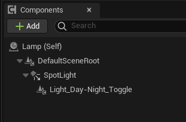
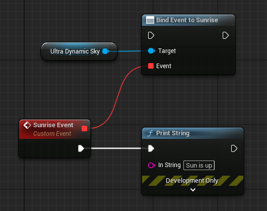

影视渲染与关卡控制
用 Sequencer 给天空做关键帧、影片渲染与路径追踪的注意事项、体积云无缝循环的做法，以及让关卡在日落时开灯、在指定时刻触发事件。
用 Sequencer 给天空做动画
给 Time of Day 打关键帧
直接给 Time of Day 做动画时，先关闭 UDS 上的 Animate Time of Day，
然后对 Time of Day 变量打关键帧。这个值允许超过 24，系统会理解为进入下一天、继续向前推进。
给云量或雾打关键帧
场景里没有 UDW 时，可以直接对 UDS 的 Cloud Coverage、Fog 打关键帧。
如果场景里有 UDW，则应该改用 UDW 的手动天气状态来给这两项打关键帧，否则会被天气状态覆盖。
给云的移动打关键帧
- 把
Cloud Speed设为 0。 - 关闭
Randomize Cloud Formation on Run与Clouds Move with Time of Day。 - 在 Sequencer 里对
Cloud Phase打关键帧。
这样做的好处是每次回放完全一致，适合需要精确复现的镜头。
其它变量
并不是所有变量都会在运行时动态重算，所以也不是所有变量都能直接做动画。默认情况下，能直接工作的变量都已标记为可被影视引用（Expose to Cinematics）。
需要额外暴露某个变量时：在蓝图编辑器里打开 UDS，在 My Blueprint 面板找到该变量，
在变量详情中勾选 Expose to Cinematics。不过这样暴露的变量通常不会随关键帧自动更新，
需要在动画的每一帧调用对应的 Static Properties 函数强制刷新。
渲染影片
用 Movie Render Queue 出片前，先把 Project Mode 改成 Cinematic / Offline：
这个模式会按最高画质配置天空，并关掉那些只在实时渲染里有意义的优化。
如果项目本身需要实时性能，渲染结束后务必把 Project Mode 调回
Game / Real-time，否则游戏性能会显著下降。
UDS 上还有 Cinematic / Offline Mode 分类，用来单独调整该模式下的画质档位。
路径追踪（Path Tracer）
路径追踪不原生渲染天空，而是用天光的立方体贴图代替。所以在启用了 UDS 的场景里打开路径追踪， 天空部分会受到这个限制。
为此 UDS 提供了一个补偿选项：在 Cinematics / Offline Rendering 分类里勾选
Adjust for Path Tracer，它会尽量把天空调整成适合作为路径追踪背景的样子。
另外 Fog Color 分类里的 Render Height Fog In Path Tracer Using Post Process
默认开启，用后期处理近似渲染远处的高度雾——路径追踪本身不支持高度雾。
体积云的无缝循环
需要让体积云无缝循环（例如渲染一段循环影片）时，可以在一定限制下做到。原理是让云的形成纹理在 UV 上 完整走完一个 0–1 周期，因此循环长度天然比较长，云速正常时尤其明显。
配置步骤：
| 分类 | 设置 | 值 |
|---|---|---|
Cloud Movement | Cloud Speed | 0（时间由 Cloud Phase 控制） |
Cloud Direction | 沿单一轴向：0、90、180 或 270 | |
Formation Change Speed | 1（用 0.5 也可以，但循环长度要翻倍） | |
Volumetric Clouds | 3D Noise Scale | 1 |
Cloud Formation Texture Scale | 1 | |
Macro Variation | 0 | |
3D Noise Vertical Movement | 0 |
配置好之后，把 Cloud Phase 从 0 关键帧到 100，就是一段无缝循环的云动画。
（若 Formation Change Speed 用了 0.5，则改为 0 到 200。）
夜晚自动开灯
资源里带了一个专门的组件 Light Day/Night Toggle，位于 Blueprints/Utilities 文件夹。
把它作为子组件加到任意 Actor 的灯光组件下面即可。

- 运行时，灯光的开关状态由太阳是否在地平线以上决定。默认夜里亮，可以在组件设置里反过来。
- 默认会做一段渐亮的强度动画，模拟灯具启动；可以关掉或调整曲线。
- 灯光状态还可以驱动一组动态材质实例上的
Light Toggle标量参数（0–1），把材质实例加进组件的数组即可。
如果某些“灯”只是材质上的自发光、没有灯光组件，用材质函数代替蓝图：
Day to Night Color 与 Day to Night Float 会根据太阳是否升起在两个输入之间切换。
按时间触发事件
UDS 内置了一组事件分发器，分别在日落、日出、午夜、每小时、每分钟以及自定义时刻触发。
用法是先拿到 UDS 引用——用共享函数 Get Ultra Dynamic Sky 最方便——再绑定对应事件，例如
Bind to Sunrise、Bind to Sunset。

| 分发器 | 触发时机 | 输出 |
|---|---|---|
Sunrise / Sunset | 太阳越过地平线的那一分钟。可用 Sunrise Event Offset、Sunset Event Offset 提前或延后。 | — |
Midnight | 午夜。 | — |
Hourly | 每个经过的整点都会触发。时间被瞬间跳过多少小时，就补触发多少次。 | 当前小时（整数） |
Current Hour Changed | 时间变化后只触发一次，对应新的当前小时。 | 当前小时（整数） |
Every Minute | 每分钟一次，行为类似 Current Hour Changed。 | 当前分钟（0–59） |
| 自定义时刻 | 默认不触发。需要在 Animate Time of Day 分类的 Custom Time Dispatchers 数组里填入时间点。 | 触发的数组索引 |
Animate Time of Day 分类里还有一个 Time Event Dispatcher Check Period，
决定这些事件多久检查一次。默认在 Time of Day 正在变化时每秒检查一次。
自定义时刻触发时会输出数组索引，方便你在同一个事件里区分是哪个时间点到了。
天空工具材质函数
材质面板里可以搜到两个由 UDS 状态自动驱动的工具函数：
-
Day to Night Float/Day to Night Color：接收两个值，按太阳是否在地平线以上在两者之间插值。 可以设置阈值偏移（高于或低于地平线多少算切换），以及过渡区间的宽窄。 -
Active Sun or Moon Vector：太阳在地平线上时输出太阳方向的单位向量，只有月亮时输出月亮方向。 同时输出一个 0–1 的遮罩值，在日月切换的瞬间降到 0，用来掩盖依赖该向量的效果突变。